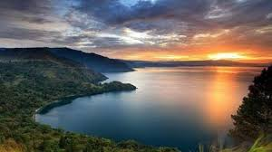

Sejarah
Danau Toba adalah sebuah keajaiban alam yang sangat menakjubkan. Danau ini diperkirakan terbentuk dari letusan dahsyat sebuah gunung api, Gunung Toba, yang terjadi sekitar 74.000 tahun yang lalu. Dengan luas lebih dari 1.145 kilometer persegi dan kedalaman 450 meter, Danau Toba sebenarnya lebih mirip lautan daripada danau. Di tengah danau vulkanik terbesar di dunia ini juga terdapat sebuah pulau yang berukuran cukup besar, yaitu Pulau Samosir.
Geografis

Danau ini memiliki panjang 100 kilometer (62 mil), lebar 30 kilometer (19 mi), dan kedalaman 508 meter (1.667 ft). Danau ini terletak di tengah pulau Sumatra bagian utara dengan ketinggian permukaan sekitar 900 meter (2.953 ft).Secara administrtif dan geografis, Danau Toba dikelilingi oleh 7 kabupaten. Dapat dibayangkan seberapa luasnya danau ini. Kabupaten-kabupaten tersebut adalah Kabupaten Simalungun, Tobasa (Toba Samosir), Tapanuli Utara, Humbang Hasundutan, Dairi, Karo, dan Samosir.
Wisata
Apakah di sekitar Danau Toba juga terdapat destinasi unggulan yang tak kalah menawan? Tentu saja ada. Destinasi ini pun lokasinya sangat berdekatan dengan Danau Toba. Meskipun mungkin namanya belum terlalu populer jika dibandingkan dengan Danau Toba, namun pemandangan alam yang disuguhkan destinasi ini dijamin akan memukau mata Sobat Pesona.
Paropo
Sobat Pesona langsung memesan tiket dan datang ke Desa Paropo yang terletak di tepi Danau Toba, Sumatra Utara. Nuansa desa yang masih otentik, kehangatan dari masyarakat setempat, pemandangan pegunungan nan hijau dan kecantikan Danau Toba yang berpadu menjadi satu kesatuan dijamin membuat Sobat Pesona terkesima. Jika ingin berlama-lama menikmati keindahan ini, jangan ragu untuk kemah di lokasi ini, ya. Biasanya ada banyak wisatawan yang memilih untuk bermalam di sini dengan tenda warna-warni dibandingkan menyewa hotel, karena tertarik merasakan suasana baru yang lebih dekat dengan alam.
Air Terjun Situmurun
Air Terjun Situmurun yang lokasinya sangat berdekatan dengan Danau Toba tepatnya berada di Desa Situmurun, Kecamatan Lumban Jalu, Kabupaten Toba Samosir. Air terjun ini sangat unik karena aliran airnya bukan ke sungai atau anak sungai, melainkan langsung menuju ke Danau Toba. Airnya yang sangat segar dan dingin tentu akan membuat Sobat Pesona tergoda untuk berenang. Pesona air terjun ini juga terletak pada ketinggiannya yang mencapai 70 meter dengan tujuh tingkatan. Namun Sobat Pesona harus berhati-hati ya jika memutuskan untuk bermain di air, karena arusnya yang cukup kuat. Tertarik untuk berfoto dan berenang di sini? Sobat Pesona harus menyewa kapal karena akses menuju air terjun hanya dapat dilalui dengan jalur transportasi air.
Bakkara
Ini adalah sebuah lembah tempat kelahiran Raja Batak, Sisingamangaraja. Posisinya berada di pinggir Danau Toba dan diapit oleh bukit-bukit dengan pemandangan menawan. Lembah ini dapat dijadikan sebagai spot alternatif jika Sobat Pesona ingin menikmati pesona Danau Toba dari ketinggian.Bakkara juga dikenal kerana memiliki tempat pemandian peninggalan Sisingamangaraja yang disebut Aek Sipangolu. Tempat ini dianggap sakral oleh masyarakat setempat.